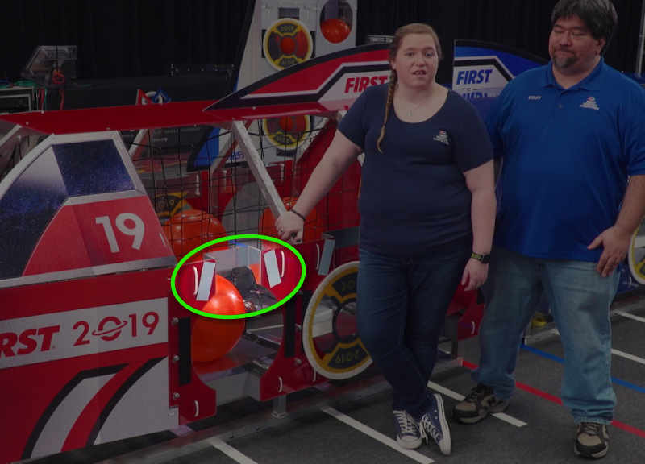

Robovision on our 2019 FRC bot
Posted on Mon 15 April 2019 in OpenCV
Now that our 2019 FRC season is over, I'd like to describe how Team 1518 implemented vision processing on our bot. We set some aggressive goals, which we aimed to achieve by using the the robovision library, OpenCV, and Python on a Jetson TX2. The primary goals of this post are to cover the high-level approaches we used and to share what did or didn't work. Of course, I'll link to the code we created.
We set out the following goals for vision on our bot this year:
- Identify and isolate the retro-reflective tape targets
- Determine our distance to those targets
- Determine our angle to the plane of the targets
- When aiming reasonably face-on, determine how far left or right of center we were situated relative to the targets
We had a few other needs, such as communicating with the RoboRIO and driver's station, and maintaining good performance while performing multiple tasks. We also decided to control a set of RGB "neopixel" LEDs to use as signals to the driver of the bot's state. And, we planned to use the Jetson to stream a pair of cameras back to the driver's station, with custom overlays.
That's a significant pile-of-priorities and I'm very proud of our sole vision sub-team programmer Emma. Working together, she and I accomplished all but one of those goals on the test field. Unfortunately, we never got to put it into "production." At the Finger Lakes Regional (FLR), our bot was overweight and we had to leave off the Jetson. Between then and Buckeye, we shaved off enough weight to permit the Jetson. But by then, the drive team was comfortable driving the bot manually and didn't want to deal with the new controls. Just the same, our system did work and we learned a lot from implementing it.
Targeting
The core function of our efforts were target identification and measurement. As shown below, a pair of retro-reflective vision tapes were mounted aside each hatch opening. The 2019 Game Manual listed various details of the tapes, for example that they were tipped at inward at 14.5° angles. Our goal was to isolate those tapes and make sure we were looking at a matched pair.

At a high level, we:
- Grabbed frames from the camera
- Used contour detection, looking for specific colors that represented the tape targets
- Used a series of filters to be sure we were looking at a matched pair of tape targets while discarding false matches (e.g. the right tape of one set and the left tape of another)
- Measured various characteristics of the targets when we found them
- Shared that info with the Rio via NetworkTables and with the Arduino controlling our LEDs via serial-over-USB.
That's all implemented in the targeting.py file in the team's repo. There's a lot going on in this file. I'll go into some of the details below.
Finding and isolating the targets
The robovision library includes a pre-built contour detection method. We just needed to supply a range of colors to look for. We used the standard green LED ring light that comes in the FRC "kit of parts." We used an Axis IP camera with its exposure and brightness settings cranked about as low as they'd go. Through experimentation, we found that we could isolate the reflective tape by looking for colors between HSV (60, 100, 100) and HSV (100, 255, 255).
Looking at the run() function you can see we call robovision's target.get_contours(frame) in each iteration of the loop. Then, we call our own self.process_contours(contours) function. It gives us back info like whether a target is in view.
In that function, we sort the contours left-to-right so that we can methodically step through them in a known order. Then, we pass them through a series of "filters" to eliminate false detections:
- Aspect ratio — the tape targets were 2-inches by 5.5-inches, giving an aspect ratio of 0.36. Any contour with an aspect ratio significantly different than this was ignored.
- Solidity — a contour that encloses a "non-solid" region (think of something shaped like a letter "C") wasn't likely to be one of the rectangular tape targets. So, we'd ignore it.
- Angle — the tape strips were attached at 14.5° angles. Contours that were not oriented at angles close to that were ignored. Robovision provides a convenient
target.get_skew_angle(contour)function for finding the contour orientation angle. - And to be a valid target, we need a pair of tapes, one tilted right and one tilted left.
Positional orienteering
Once we had weeded out any false detections, we moved on to measuring and calculating. We used the "triangle similarity" technique, described on the PyImageSearch blog, to measure the bot's distance from the tape targets.
In the "lab," we measured the perceived width in pixels of a 12" piece of reflective tape at various distances. This gave us a ratio of pixels seen in the image to actual distance. At game time, we used robovision's target.get_extreme_points(contour) function to find the x/y coordinates of the corners of the tape targets. Using those coordinates, we counted the pixels between the top-most and bottom-most points. We plugged that pixel count, plus our precalculated ratio, into the triangle formula to determine the bot-to-target distance. This technique was accurate to a fraction of an inch.
We also used those corner coordinates to determine how far left or right the bot was in relation to the midpoint between the tape targets. Our original bot design included an articulated ball/hatch-cover manipulator. We planned to use this offset info to move that arm, alleviating the need for the bot to be centered on the hatch. We were able to calculate the offset within a fraction of an inch.
We were not successful in calculating the bot's angle to the hatch (plane of the target tapes). We tried a few techniques, none of which worked. For example, basic trigonometry tells us that the arc-cosine of the distance between the tapes divided by the distance to the tape equals the approach angle. In practice, we never got a good result. We decided that there were just too few pixels to work with, leading to gross inaccuracies. This is definitely an area we'll explore more over the off-season.
Communicating with the RoboRIO
Per FRC rules, the Rio must control the bot's actions. The parameters calculated by our vision code could be inputs to the Rio's routines. But for that to work, we needed to pass the calculated values in realtime to the Rio.
We considered a couple of options, including streaming data across a custom socket connection. In the end, we settled on a super-simple technique. The wonderful folks at the RobotPy project have created a NetworkTables implementation that worked flawlessly for us. We simply wrote our calculated values to a NetworkTable and the Rio read them from there. (Note: NetworkTables might be too slow for a high-speed, shooting game.)
Powering the Jetson
Our original plan was to power the Jetson from a cellphone powerpack. We found one on Amazon that output 12V and wasn't too heavy. This would have given us a stable power source that wouldn't abruptly shut off when the bot powered down. Unfortunately, the inspectors at Buckeye would not permit us to use that battery because they said it had too high an amperage rating.
After some research, we found that the Jetson TX2 is set up to handle an "uncontrolled" power loss by going through a fast shutdown process. According to the support forums, a power loss shouldn't cause filesystem corruption issues. So, we wired the Jetson directly to the power distribution panel (PDP) and it seemed to work fine. Of course, we didn't use it on the field so your mileage may vary.
Summary
We were intrigued by the Limelight system that some teams used this year. It promised to provide prebuilt routines to do many of the tasks we had to code ourselves this year. Nvidia just released the Jetson Nano, which is much smaller and lighter and runs off a 5V power source. Our TX2 may be retired in favor of one of these other systems. But the techniques we learned this year have given us a deeper understanding of vision processing. We'll put that knowledge to good use next year regardless of which system we use to implement our vision subsystem.
Per FIRST's rules for future re-use, all our code is on our GitHub repo. Feel free to explore it and use it in your projects; there's some cool stuff going on in there. In a future post, I'll go over the parallel processing code that we used to run multiple scripts across the cores of the Jetson TX2.